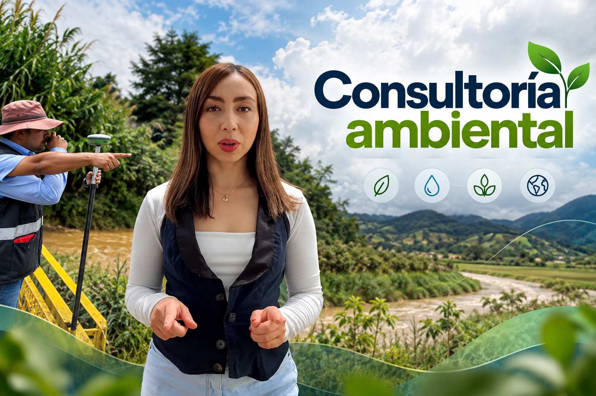
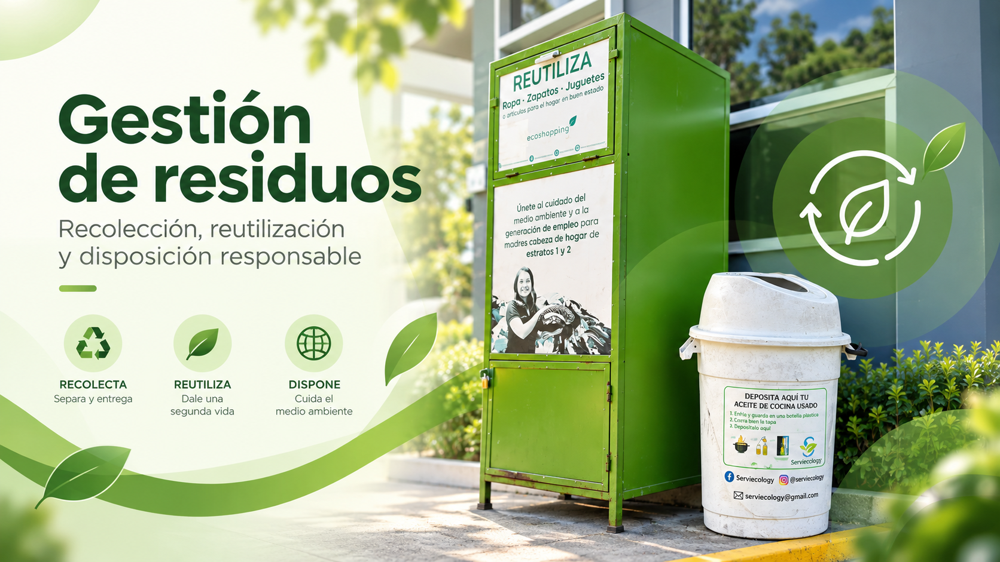
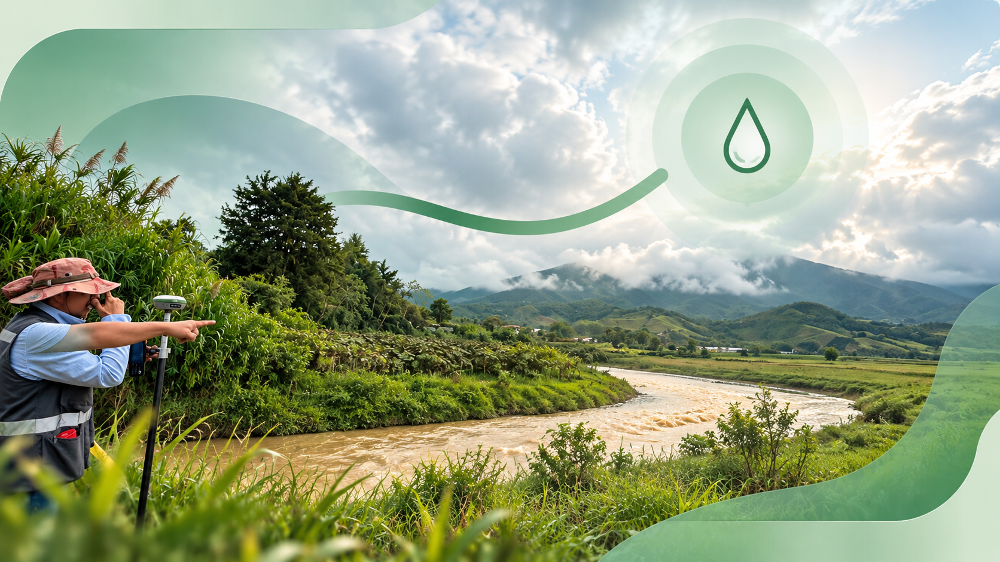

Consultoría ambiental
Soluciones ambientales para cumplir, gestionar y avanzar.
Acompañamos a empresas, organizaciones y personas con soluciones prácticas, eficientes y técnicamente sustentadas.

Acompañamos a empresas, organizaciones y personas con soluciones prácticas, eficientes y técnicamente sustentadas.

Concesiones de agua, vertimientos, ocupaciones de cauce, conceptos sanitarios y otros requerimientos.
Diseñamos PGIRS, PMIRS, PGIRASA, planes de contingencia y programas ambientales.

Soluciones para concesiones, vertimientos, PUEAA, caracterizaciones y uso eficiente del agua.

Convertimos requerimientos técnicos y normativos en soluciones prácticas mediante acompañamiento profesional permanente.
Diseño de PGIRS, PMIRS, PGIRASA, caracterización y acompañamiento para una gestión responsable de residuos.
Ver servicio →Concesiones de agua, permisos de vertimiento, PUEAA, ocupación de cauce y soluciones asociadas al recurso hídrico.
Ver servicio →Planes de saneamiento para piscinas, restaurantes, hoteles, condominios, hospitales, empresas y fábricas.
Ver servicio →Acompañamiento técnico y documental ante autoridades ambientales y sanitarias competentes.
Ver servicio →Planes de manejo ambiental, aspectos e impactos, riesgo ambiental, contingencias y diagnóstico técnico.
Ver servicio →Auditorías, asesorías, capacitaciones y soporte técnico permanente para equipos y organizaciones.
Ver servicio →Cuéntanos tu actividad y necesidad. Te orientamos sobre los instrumentos, permisos o trámites que pueden aplicar.

Concesiones, vertimientos, PUEAA, ocupación de cauce, caracterizaciones y saneamiento.
Explorar →
Vertimientos al suelo, movimientos de tierra, riesgo ambiental y gestión de impactos.
Explorar →
Gestión de emisiones, fuentes fijas, calidad del aire y requerimientos atmosféricos.
Explorar →
Flora, fauna, aprovechamiento, compensaciones y evaluación de impactos bióticos.
Explorar →
PGIRASA, residuos peligrosos, contingencias, segregación, almacenamiento y capacitación.
Explorar →Profesionales con experiencia en gestión ambiental, seguridad y salud en el trabajo, auditorías, permisos y acompañamiento ante autoridades.
Conoce al equipoConoce qué es un Plan de Manejo Integral de Residuos Sólidos, cuál es su propósito y por qué puede ser una herramienta clave para propiedades horizontales, empresas y otras organizaciones.
Leer artículo →Te explicamos en qué situaciones puede requerirse una concesión de aguas superficiales o subterráneas y cuáles son los primeros pasos para estructurar correctamente el trámite.
Leer artículo →Restaurantes, centros estéticos, veterinarias, IPS y otros establecimientos pueden estar sujetos a requisitos sanitarios. Conoce cómo prepararte para una visita o trámite.
Leer artículo →Depende de la actividad, la generación de residuos y los requisitos locales. Evaluamos el contexto de su organización y definimos el alcance aplicable.
Cada instrumento tiene un alcance y población objetivo diferente. Nuestro equipo identifica cuál corresponde según la actividad, el tipo de residuo y la regulación aplicable.
Aplica principalmente a generadores de residuos asociados a actividades de atención en salud y otras actividades reguladas. Se revisa cada caso de forma particular.
Cuando se pretende usar agua de una fuente superficial o subterránea en los casos sujetos a autorización de la autoridad ambiental.
Cuando la descarga de aguas residuales está sujeta a permiso según el medio receptor, la actividad y la normativa vigente.
Es el Programa de Uso Eficiente y Ahorro del Agua, orientado a planificar acciones para optimizar el uso del recurso hídrico.
La exigencia depende del tipo de establecimiento y de la autoridad sanitaria competente. Prestamos acompañamiento para restaurantes, centros veterinarios, centros estéticos, laboratorios e IPS, entre otros.
Incluye programas, procedimientos, responsabilidades, frecuencias, registros y controles acordes con el establecimiento y su riesgo sanitario.
Agenda una asesoría inicial y revisemos juntos el siguiente paso.
Agendar por WhatsApp